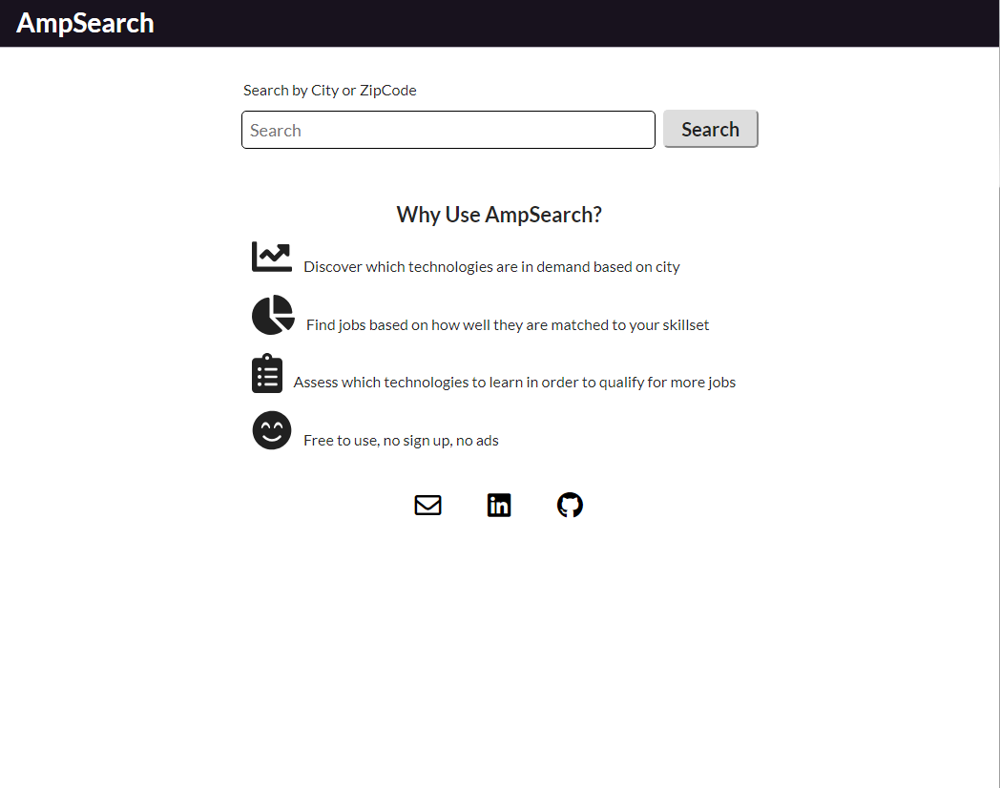

Amp Search
A interactive fullstack web app that allows users to search for jobs based on skills/ technlogies that the user has. The jobs with the closests match are shown at the top of the search results. Users can then use that information to asses which technologies are in demand based on region.